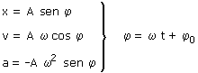
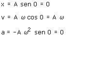
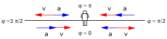

Fase y situación del móvil
La situación (Posición, velocidad y aceleración) de un móvil armónico depende de la fase temporal

Situaciones que corresponden a valores de fase usuales:
φ = 0
φ = π/2
φ = π
φ = 3π/2

Está en el origen moviéndose en sentido positivo con la máxima velocidad
